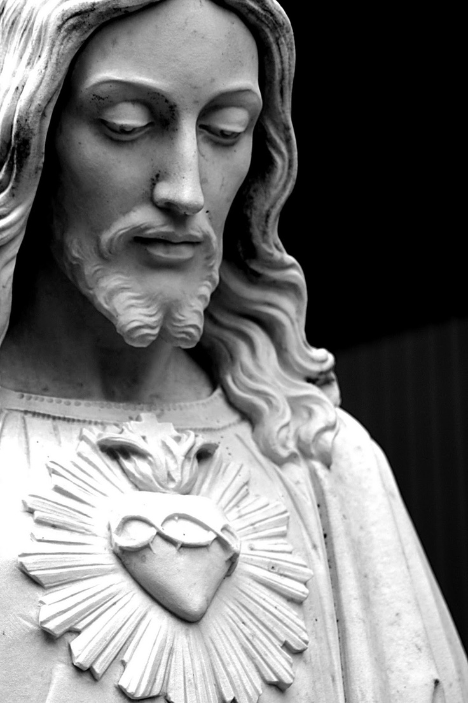
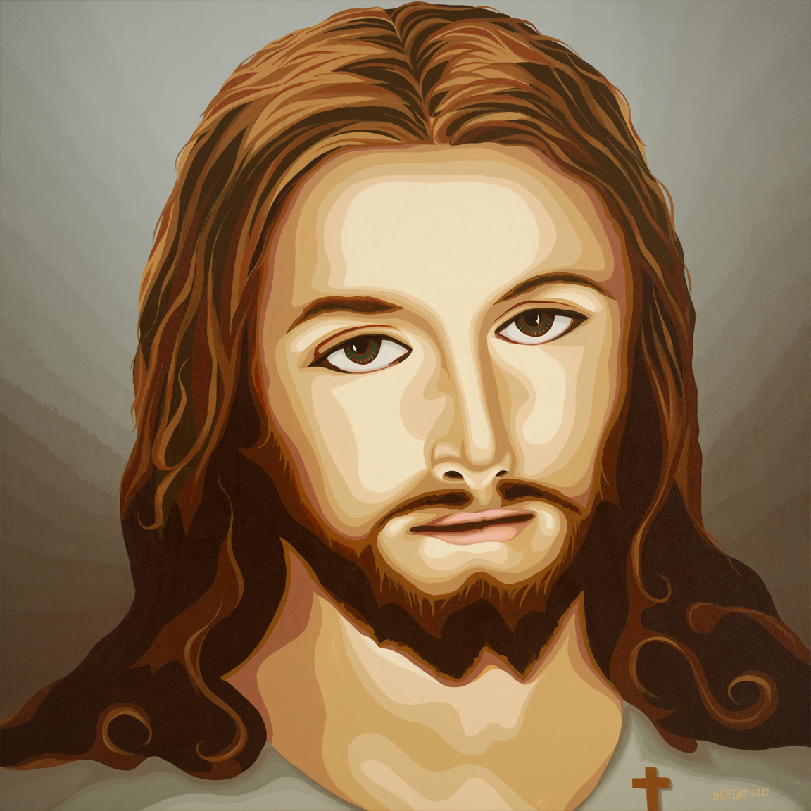
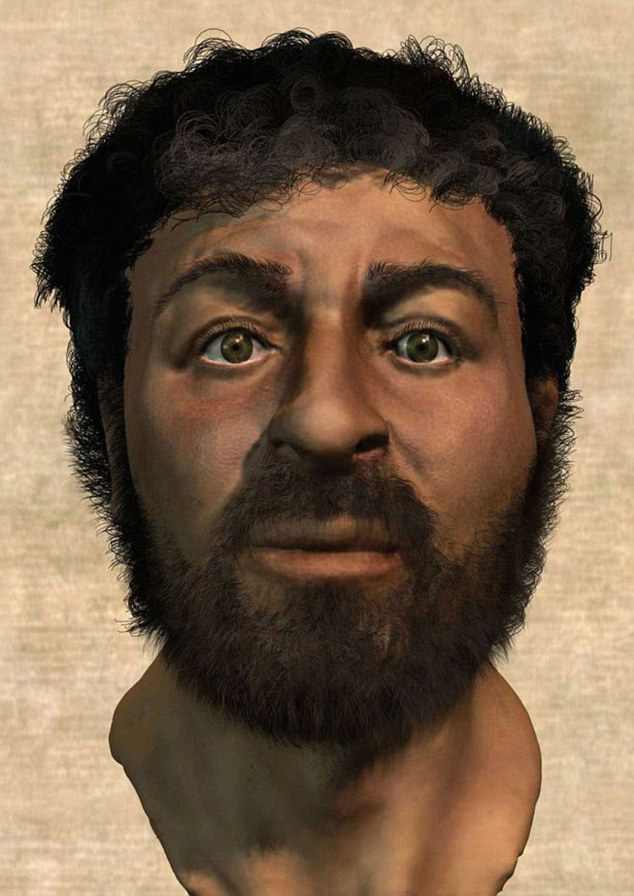

Jesus in the general public mind, has this image of a pale colored, bearden man.
But historically, Jesus was born in Bethlehem, a small town located in the Middle East. When you imagine a man coming from the Middle East, a tall, muscular caucasian male does not really come to mind as shown in the common paintings and statues usually asociated with Jesus.
 In fact, Jesus was actually much smaller in stature and had darker skin, he was born in the Middle East, and so he looked Middle Easternlike everyone else during that time. Jesus was also most likely quite thin due to the amount of fasting he would usually do.
Had Jesus posssesed white-skin, there should have been some note in the bible about it. Scientists have since then made a 3d rendition of what Jesus' face would actually look like.
This was based on data gathered from various bones left behind and studying the appearances of people in the area of Jesus' time.
The reason for this was due to the artists during the renaisance period. During the surge of art, music and religion in Europe, from the 14th to the 17th century there were many paintings of Jesus Christ as Christianity was the dominant religion in Europe and these painting would be the basis of Jesus' appearance in the present era. Many painters did not know what Jesus looked like, and so instead painted Jesus as they would a typical European and so Jesus was given the features of a European man, white-skinned, tall, and has brown hair wit a beard.